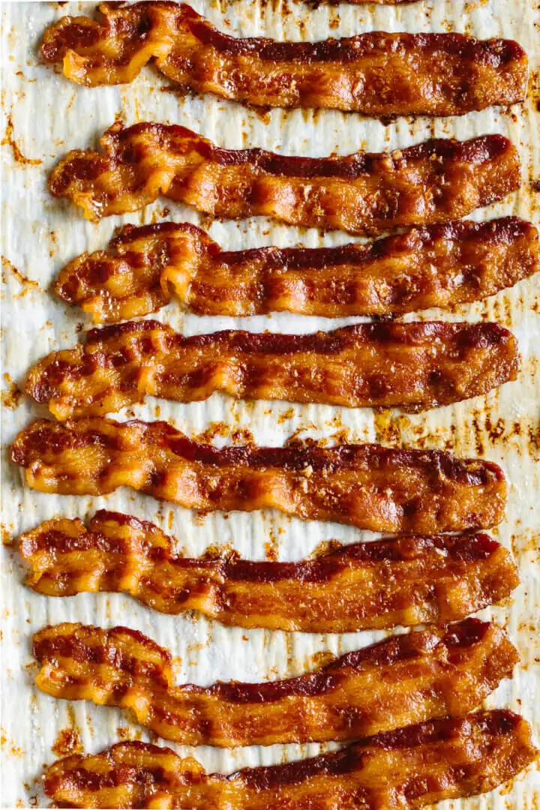

Oven Baked Bacon Recipe

A column of crispy cooked bacon.
This recipe is a favorite in my household. We are a bacon family and we like to eat all types of bacon. Sometimes we probably even eat too much bacon. But here is my contribution to the greater bacon loving world.
With just a few easy steps, you can also be enjoying oven baked bacon. Have fun!
Ingredients
Directions
- Preheat your oven to 400 degrees fahrenheit.
- Line a large baking sheet with parchment paper.
- Lay the bacon slices on the baking sheet.
- Cook the bacon for 10 to 20 minutes or until it’s as crispy as you’d like.
- Remove the bacon from the oven and transfer to a paper towel-lined plate.